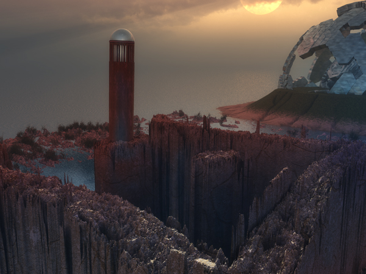
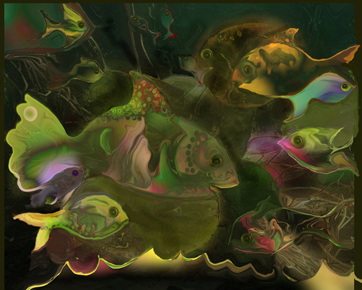
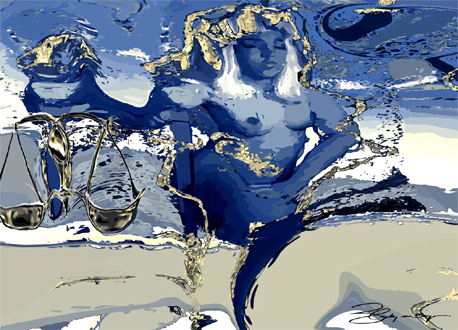

This page has not yet been fully populated
Click image to view artist's full exhibit
Level Va m
by Adam Martinakis
03/21/2022

Photoshop
by Holly Ahlberg
03/22/2022

Quaternity
by H.Gay Allen
03/23/2022

Ari
by James Allen
03/24/2022

Dusky Twilight
by James Almang
03/24/2022

Icon 1
by Antonio
03/25/2022

Moon Tower 
by Syd Baker
03/26/2022
Seagreen 
by Georgia Bassen
03/27/2022
Sun Drenched Fall Trees
by Ariana Bauer
03/28/2022

Boris_Benko_120MPx_Flower
by Boris Benko
03/29/2022
Vectorism_Justitia 
by Elaby M. Berger
03/30/2022
Dusty Sings Live
by Aart Berkhof
03/31/2022